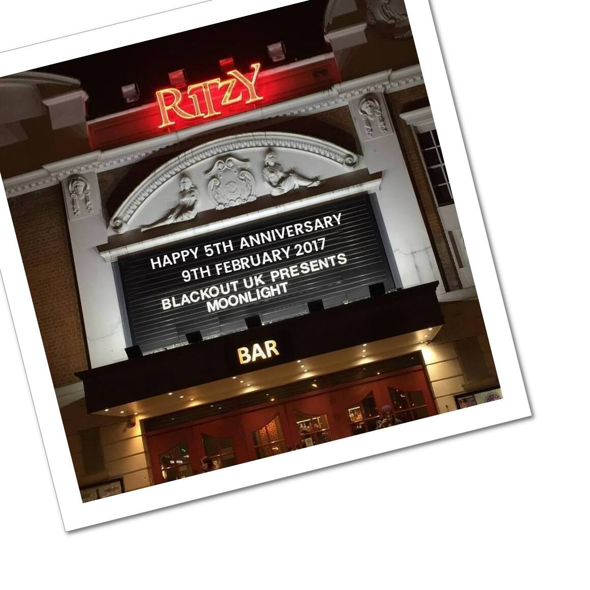
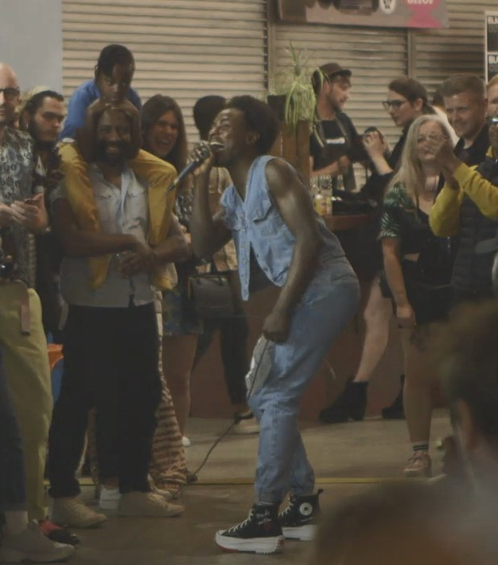
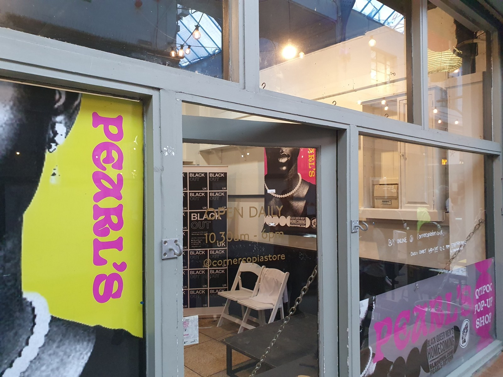

It started here
When Ivor Cummings — the Croydon-raised, openly gay civil servant whose name is over every BLKOUT door — found the Windrush generation their first beds in the deep shelter under Clapham Common, the nearest labour exchange was on Coldharbour Lane. Brixton became Black London's front room because that's where the work was. And the room has always held us: beneath her Railton Road dress shop, Pearl Alcock ran the only gay bar in Brixton — a 1970s shebeen sheltering Black queer men from every borough — and ended her days a celebrated artist, hung at Tate Britain in 2005.
The record runs deep here: The Vox on Brighton Terrace, the first club of its kind run by and for Black queer people; the Brixtonian; Sistermatic's sound-system parties; Big Up's pioneering health work for Black gay and bisexual men. This door continues the story in the present tense.
The 2021 Census counted around 76,100 Black residents in Lambeth — nearly a quarter of the borough — and the borough's own LGBT+ forum calls Lambeth home to the largest LGBTIQ+ community in the UK. On the estimates we publish, that's 1,700 to 2,400 Black queer men: enough to fill the Academy's stalls, and still described as 'too small' for a single specialist service. We think the men were never the wrong size — the map was. These are working estimates and we welcome correction.
Here in Lambeth
The richest Black queer ecosystem of any London borough — some of it ours to point at, all of it yours to use.
-
Ajamu Studios
The Brixton studio of Dr Ajamu X — fine-art photographer, archivist and co-founder of the rukus! Black LGBTQ+ archive: three decades of celebrating Black queer men's bodies, desire and joy.
checked -
Black, Queer & Thriving — Black Thrive Lambeth
Programmes and peer support for Black queer Lambeth — including the Queer Minds peer group in Brixton.
listed, not yet re-checked
Recently in the borough
- Nov 2025 The Congregation — an evening of conversation, film and audio at the Ritzy, Brixton
- Nov 2025 We Look Back, We Live On at the Royal Vauxhall Tavern
- Nov 2025 B8TS gathering for National Men's Circles Day, Minet Road, Brixton
- Nov 2025 A Breath of Fresh Air — spotlight on environmental racism, Brixton Library
- Sep 2021 Pearl's Return — BLKOUT's Black queer men's homecoming festival, named for Pearl Alcock, across Brixton Market
From our own calendar's record. What has already happened here doesn't go stale — a borough's recent past is proof of life.
In the directory — BLKOUT in Lambeth
- Ajamu Studios — Ajamu X's fine art photography studio exploring the Black male body and same-sex desire, open for hire.
- Black Thrive Lambeth — LGBTQIA+ Programme — Black Thrive Lambeth's LGBTQIA+ programme — Black, Queer & Thriving, and a Black LGBTQ+ working group
- Bootylicious — Long-running Black queer club night — Afrobeat, Amapiano, RnB, Dancehall — for Black gay/queer men.
From the BLKOUT Places directory — every entry checked for activity in the last year.
Gatherings across London — the BLKOUT events calendar
Fewer and truer: what's actually on for Black queer London, checked by people, never padded.
Beside us in the borough
Lambeth's queer and Black civic life is deep. These neighbours do good work — use them, and tell them we sent you.
-
Lambeth Links
The borough's LGBTQ+ signposting and community network.
listed, not yet re-checked -
Black Men's Consortium — Mosaic Clubhouse
Black men's mental health and community, Brixton.
listed, not yet re-checked -
Brixton House
The borough's theatre — a stage that carries Black and queer work all year.
listed, not yet re-checked -
Royal Vauxhall Tavern
The grande dame of London's queer stages since the 1860s — Grade II listed for its LGBTQ+ history, still holding court on the Vauxhall roundabout.
listed, not yet re-checked -
Two Brewers
Clapham High Street's dancefloor-and-cabaret institution.
listed, not yet re-checked -
Eagle London
Vauxhall's neighbourhood gay bar — home of Horse Meat Disco's Sunday service.
listed, not yet re-checked -
The Cocoa Butter Club
Cabaret showcasing performers of colour — 'decolonise and moisturise' — regularly on the RVT's stage.
listed, not yet re-checked
Worth the journey
Black queer men have never let a borough boundary decide where community happens. Where you're centred, not just welcome:
-
Melanin Vybz — London LGBTQ+ Community Centre
Monthly group for LGBTQ+ Black people and people of colour over 50 — next door in Southwark, on Hopton Street.
listed, not yet re-checked -
House of Rainbow
Fellowship and support for Black LGBTQ+ people of faith.
listed, not yet re-checked -
Ballroom at Stanley Arts
Black queer performance culture down the line in South Norwood — BLKOUT's home borough.
listed, not yet re-checked
Look after yourself
Free, confidential, no GP needed, no judgement — and your business stays yours.
-
Black Psychotherapy
Intersectional, anti-oppressive therapy by and for Black and Global Majority communities — Brixton and online. The right to heal, on our own terms.
checked -
NAZ
BAME-led sexual health agency — three decades of culturally specific support where the system falls short.
listed, not yet re-checked -
BAATN — find a Black therapist
The Black, African and Asian Therapy Network's directory of therapists of Black, African, Asian and Caribbean heritage, searchable across the UK.
checked -
Sexual Health London (SHL)
Free, discreet home test kits and PrEP by post anywhere in London — order online, nothing to explain to anyone.
checked -
56 Dean Street
Soho's LGBTQ+ specialist sexual health and HIV service — Europe's largest, and long the home clinic of queer London.
checked -
Find your nearest NHS clinic
Every NHS sexual health service near you — testing, treatment, PrEP — searchable by postcode.
checked
BLKOUT in the borough
As it happened — our own occasions, on Lambeth ground.



Next door
The doors are opening borough by borough. Step through, or help us open the next one.
2,400
Your guess stays in this browser.
One dot for every Black queer man the census estimate puts in Lambeth — between 1,700 and 2,400 of us.
| Borough | Black residents (2021) | Black queer men (est.) |
|---|---|---|
| Croydon | 88,500 | 2,000–2,800 |
| Newham | 88,200 | 2,000–2,700 |
| Lewisham | 81,900 | 1,800–2,600 |
| Southwark | 80,100 | 1,800–2,500 |
| Lambeth | 76,100 | 1,700–2,400 |
| Brent | 62,500 | 1,400–2,000 |
| Hackney | 59,300 | 1,300–1,900 |
| Enfield | 58,200 | 1,300–1,800 |
| Haringey | 52,400 | 1,200–1,700 |
| Waltham Forest | 46,700 | 1,000–1,500 |
2021 Census analysis — Who Are the UK's Black Queer Men? (BLKOUT's Critical Frequency dossier)
Nobody keeps this number. Not the council, not the NHS, not the people who commission work in this borough. The estimate is ours, built from the 2021 Census, because a population nobody counts is a population nobody plans for.
Know your Lambeth?
Three questions. No prizes except the stories.
01 Why did Brixton become the front room of Black London?
When Ivor Cummings — the openly gay civil servant BLKOUT is named for — housed the Windrush arrivals in a south London deep shelter, the closest place to sign on for work was Coldharbour Lane. Black London grew where the work was.
02 Who kept a Brixton room open for Black gay men in the 1970s, when almost nowhere else would?
Pearl Alcock ran a shebeen off Railton Road that welcomed Black gay men — and was later celebrated as an outsider artist. The room has always existed. It just wasn't always listed.
03 How many Black queer men do we estimate live in Lambeth today?
Enough to fill the Academy's stalls — and still called 'too small' for a single specialist service. We think the men were never the wrong size. The map was.
Reading the borough
The borough's Black queer story is being written down — start here, and tell us what belongs on this shelf.
- Revolutionary Acts: Love & Brotherhood in Black Gay Britain — Jason Okundaye, 2024. An oral history of Black gay Brixton — the elders, the scenes, the survival and the joy, told by the men who lived it. Ajamu among them. Read an extract
- Black and Gay, Back in the Day — Marc Thompson & Jason Okundaye, 2022. The archive and podcast keeping the pre-digital scene alive — The Vox, the sound systems, the nights the internet never saw.
- Beyond the Labels: Loushaé's Story — Black Thrive Lambeth, 2024. Black, bisexual, non-binary and disabled in Lambeth — on never being allowed to be 'the problem person' in two different ways.
From the BLKOUT archive
Ten years of BLKOUT on Lambeth ground, in our own words:
- BlackOut UK Lounge launched in Brixton! — Jul 2017
- Black Gay Ink 2, Brixton — Feb 2018
- Pledge: Pearl's Return — Mar 2021
- Pearls Mixtape Stories 1 — Young Lloyd — Sep 2021
Asked, answered
Where can I meet other Black queer men in Lambeth?
Black, Queer & Thriving and the Queer Minds peer group meet in Brixton; Ajamu Studios has celebrated Black queer men in the borough for three decades; the queer rooms of Vauxhall and Clapham High Street are on the doorstep; and BLKOUT's national community opens the moment you knock on the door below.
Where can I get an STI test or PrEP in Lambeth?
Sexual Health London posts free test kits to any London address, 56 Dean Street is a short hop north of the river, and every NHS clinic near you is searchable by postcode. No GP referral, no judgement.
Is BLKOUT a Lambeth organisation?
BLKOUT is one community-owned co-operative for Black queer men across the UK — with a door in every borough. Lambeth is where many of our members and much of our audience live; we belong wherever our men are.
I'm not out. Can I still come?
Yes. Come as you are — nobody at this door asks you to be anything first, and your business stays yours.
Be met
Come as you are. We answer.
Leave your name and we'll keep you posted about Lambeth — what's on, what's starting, and how to be part of it. This goes to BLKOUT, a co-operative owned by its members. No engagement machinery, nothing sold onward — just a community that answers.
Step inside
The door is how we find each other. BLKOUTHUB is where we live.
The members' room: Black queer men across the UK, owned by the men in it. Why knock:
- Real connection. Nearly four in five members say they came to find it — and found it.
- No algorithm, no ads, nothing sold onward. A room that doesn't monetise you. Your attention is yours; we're after your company.
- Where things actually start. Occasions, groups, and the knowledge that never gets written down — passed man to man, the way it always has been.
- Owned by us. A co-operative with an asset lock: what we build together stays ours, and passes to the men who come after.
And don't just read about AIvor — talk with him. Our own voice, named for the man whose name is over every door. Ask him about BLKOUT, about Black queer life, about Lambeth — he answers.
Talk with AIvor nowMake it truer
This page was built from what we hold and what we could check — and Lambeth holds far more than any archive: nights, rooms, elders, whole histories. Know something we've missed, got wrong, or that's gone? Tell us. Corrections get credited, if you want the credit.
If you work here
This page is for Black queer men first. But if you serve this borough — NHS, social prescribing, council, community sector, creative health, or you run a room — there's a door for you too.
- Refer. Supporting a Black queer man who could use his people? Send him this page — that is a referral, and every knock gets answered by a human.
- Commission or partner. Working on Black queer men's health, culture or connection in Lambeth? We're the community-owned, by-and-for partner — and the evidence base is already on this page. Write to rob@blkoutuk.com.
- List us. Maintain a directory, a support page, a signposting service? Our entry, ready to paste:
BLKOUT — the UK's community-owned co-operative for Black queer men. In your neighbourhood: https://events.blkoutuk.com/lambeth/ · blkoutuk.com · rob@blkoutuk.com - Run a room. A venue, night or group our men should know about? Tell us — the page gets truer, and it points at you.
We list our neighbours and our neighbours list us. That's how a borough works.